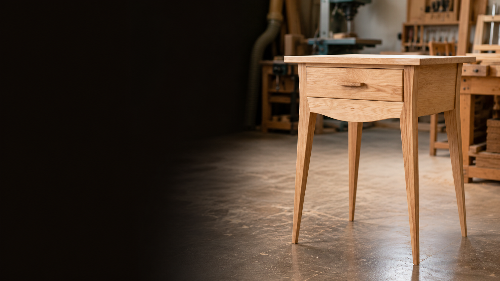
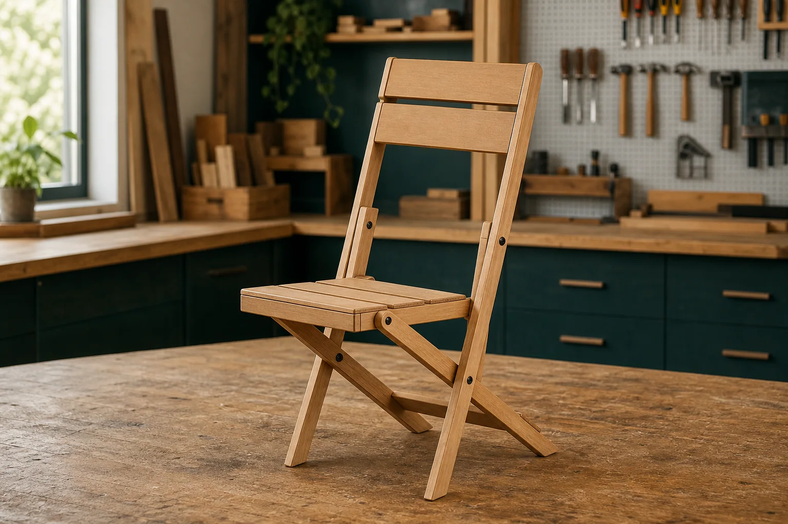

01
01
Year 9
Breadboard
Start with accurate marking, safe tool use, surface preparation and a carefully finished practical project.
Open guided courseStage 5 Industrial Technology - Timber
One clear home for your timber projects, workshop learning, assessment evidence and course resources across Years 9 and 10.



The course
Year 9 builds confidence with measuring, marking out, hand and machine tools, joinery, assembly and finishing. Year 10 extends that foundation through larger projects, more independent design decisions, project management and detailed folio evidence.
Project order follows the agreed course pathway, not school terms. Your teacher will confirm the active project and assessment requirements.
Foundation pathway
Build accuracy, safe habits and confidence as each project introduces a new level of planning, joinery and finish.
01
Start with accurate marking, safe tool use, surface preparation and a carefully finished practical project.
Open guided course 02
02
Develop control and precision through box construction, fitting components and checking the quality of the finished work.
Open guided course
03
Extend workshop skills through drawing, timber properties, joinery, assembly, costing, planning and finishing.
Open guided course
04
Take on more advanced joinery, handle design, production planning, documentation and a quality finish.
Open guided courseExtended pathway
Apply established workshop skills to larger builds, more complex assemblies and increasingly independent design and project decisions.
 05
05
Individualise a frame design while applying accurate joining, fabrication, jig use, assembly and quality assurance.
Open project siteBring together machining, mortise-and-tenon joinery, sequencing, costing, finishing and a comprehensive project folio.
Open guided course
07 ProvisionalA newer alternative project exploring a folding mechanism, accurate components, assembly and evidence-based evaluation.
Developing: this project is not yet part of the formal program.
Open guided courseShow what you know and can do
Assessment dates and task notices must come from your teacher or verified school systems. This hub does not guess them.
Accuracy, safe production, appropriate techniques, quality construction and finish.
Design development, drawings, production planning, costing and a clear record of progress.
Safe procedures, risk controls, relevant documentation and responsible workshop practice.
Timber knowledge, processes, sustainability, industry understanding and honest evaluation.
Source-aware support
The current course and the 2027 new-syllabus transition material are kept visibly separate.
The existing course program remains available locally, with the verified source folder, scope and sequence, and current syllabus linked in Google Drive.
Program trace: Pen is retained as an unnumbered two-week Year 9 woodturning mini-unit, normally after Clock and before Tool Carry-all; the current program also permits delivery after Carry-all. It remains outside the seven numbered project cards. The current Pen guided course provides the mapped timber-selection, setup and turning evidence.
The transition program intended to begin in 2027 remains available locally and through its verified Google Drive source.
Student and teacher support documents connected to the Stage 5 Timber course.
Editable I/P/E matrices map the seven-project scaffold separately against the current program and the future/new-syllabus program.
Visible syllabus connection
Exact outcome codes differ between the current program and the 2027 new-syllabus program. Use the appropriate source document above.